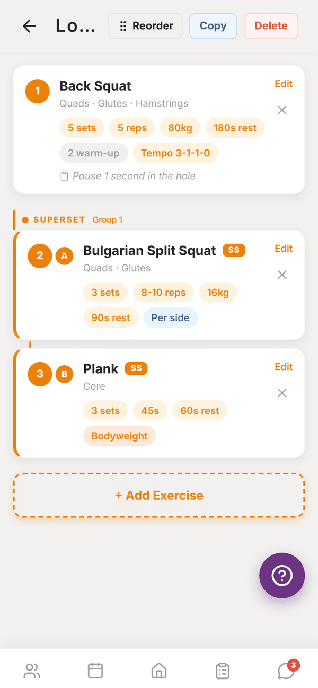
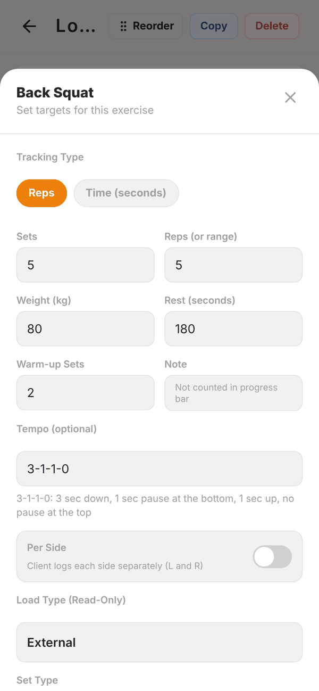
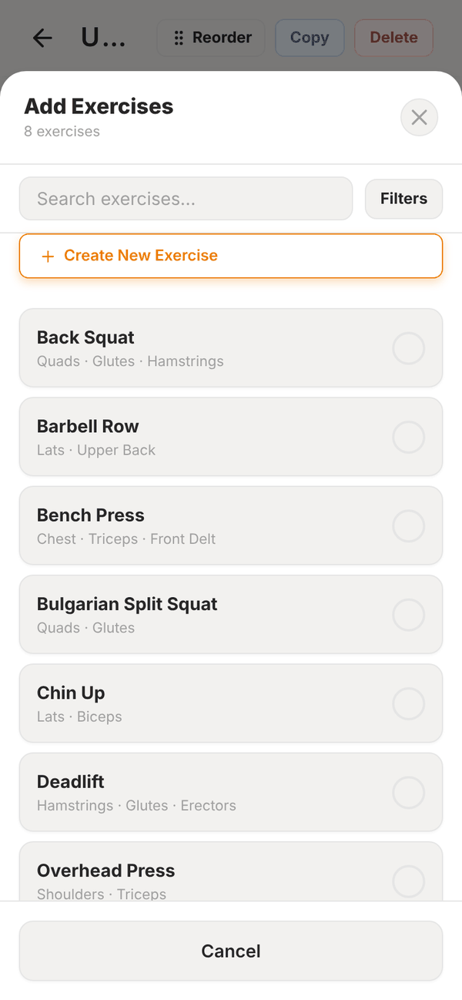

Totality for trainers
The session builder
Add exercises to a session and set sets, reps, weight, rest, tempo, warm-ups, set types, supersets and coach notes.
Tap a session in the programme builder to open it. This is where you add the exercises and set the targets your client sees and logs against.


Add exercises#
- Tap + Add Exercise.
- Search, or tap Filters to narrow by Muscle group, Equipment and Goal.
- Tick every exercise you want.
- Tap Add N Exercises.
Can't find it? Tap Create New Exercise at the top of the list. Give it a name, primary muscle group, equipment, difficulty, load type, form notes and an optional video (upload a file under 50MB or paste a YouTube link), then Create & Add to Session. It's added to the library too.

Set the targets#
Tap Edit on an exercise card to open its targets:
- Tracking Type: Reps, or Time (seconds) for holds and timed work.
- Sets, and Reps (or range) such as "8-10". For time based exercises, a duration in minutes and seconds.
- Quick Select buttons for common rep schemes.
- Weight in your lifting unit, and Rest (seconds).
- Warm-up Sets: these show to the client first and don't count toward their progress bar.
- Tempo (optional): four numbers like 3-1-2-0. Totality spells it out in plain words underneath ("3 sec down, 1 sec pause at the bottom..."). Use X for an explosive part.
- Per Side: the client logs left and right separately.
- Load Type (Read-Only): comes from the exercise in the library (External, Bodyweight, Banded, Banded + Weight). It decides what the client fills in.
- Set Type: Normal, Superset, Drop Set, Myo Reps, AMRAP, Giant Set or Rest-Pause. Each one has a short explanation under it, and the client sees the same how-to when they train. AMRAP lets you set a rep target.
- Superset Group (optional): give exercises the same number to bracket them together with A, B, C badges.
- Coach notes (optional): cues like "Keep elbows tucked, pause at bottom".
Tap Save Changes. The card shows chips for sets, reps, weight, rest, warm-ups, tempo and per side.
Reorder or remove#
- Tap Reorder at the top, then use the up and down arrows on each exercise.
- Tap the ✕ on a card to remove that exercise from the session.
Copy a session#
- Copy from Week N (on any week after week 1) copies every exercise from the same day last week. Great for progressive blocks.
- Copy at the top copies this whole session to another programme. Pick the programme, the week and the day.
- Delete at the top deletes the session.
Questions#
My client can't see the weight I set.
Check the exercise's load type. Bodyweight exercises ask the client for added weight only.
What's the difference between a superset and a giant set?
A superset pairs two or more exercises back to back with no rest. A giant set is three or more exercises in a row for the same muscle group. Either way, give the exercises the same Superset Group number to bracket them together. The group number works separately from the set type.
Can I change an exercise's load type here?
No. Load type belongs to the exercise. Change it in the Exercise library if you created the exercise.